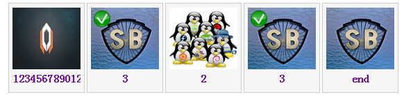

listimage
定義 listimage/listimage.js 依賴 dark.core.js dark.ui.js namespace dark.ui 描述 一個 圖片 列表 插件 
常用接口
//初始化 組件
[instance] namespace.carousel.create(_jquery //被初始化的元素
{edit:true //是否可編輯先生文本
,edit_text:"input new values" //輸入顯示文本時的 提升文本
,select:true // 是否可選擇
//事件
,on_edit_change:undefined
...
})
//返回 元素數量
[int] instance.size()
//插入 元素 到末尾
instance.append({text:"end",url:"3.jpg",data:"data.3"})
//插入 元素
instance.insert(_where,obj)
//刪除元素
instance.remove(_where)
//清空元素
instance.clear()
//設置/獲取 文本 url 附加數據
instance.set_text(n,text)
instance.get_text(n)
instance.set_url(n,url)
instance.get_url(n)
instance.set_data(n,data)
instance.get_data(n)
//選中元素
instance.select_node(n)
//取消選中元素
instance.unselect_node(n)
//返回 元素 是否被選中
[bool] instance.check_select(n)
//返回 首個 被選中元素 沒有返回 undefined
[{n/*元素索引*/}] instance.find_first_select()
//返回 下個 被選中元素
[bool] instance.find_next_select(obj)
example
html ... <!-- jquery --> <script type="text/javascript" src="jquery-1.11.2.min.js"></script> <!-- dark 核心組件 --> <script type="text/javascript" src="dark/dark.core.js"></script> <script type="text/javascript" src="dark/dark.ui.js"></script> <!-- dark listimage 組件 --> <link rel="stylesheet" type="text/css" href="dark/listimage/listimage.css"> <script type="text/javascript" src="dark/listimage/listimage.js"></script> <script type="text/javascript" src="main.js"></script> <ul id="mylist" class="dark_ui_listimage" style="width:100%"> <li class="dark_ui_listimage_node"> <a href="#"> <img src="1.jpg" class="dark_ui_listimage_node_image" alt="#"> </a> <a href="#" class="dark_ui_listimage_node_text">1</a> <span></span> </li> <li class="dark_ui_listimage_node"> <a href="#"> <img src="2.jpg" class="dark_ui_listimage_node_image" alt="#"> </a> <a href="#" class="dark_ui_listimage_node_text">2</a> <span></span> </li> <li class="dark_ui_listimage_node"> <a href="#"> <img src="3.jpg" class="dark_ui_listimage_node_image" alt="#"> </a> <a href="#" class="dark_ui_listimage_node_text">3</a> <span></span> </li> </ul> ... main.js $(document).ready(function() { var namespace = dark_using_namespace("dark.ui"); var jq = $("#mylist"); var obj = namespace.listimage.create(jq,{ edit:true, edit_text:"請輸入新名詞", select:true, on_edit_change:function(n){ alert("item " + n + " text change"); }, on_click_node:function(n){ //alert("click " + n); }, on_dbclick_node:function(n){ //alert("dbclick " + n); }, on_mouse_down:function(n,e){ //alert("mouse_down " + n); }, on_mouse_up:function(n,e){ //alert("mouse_up " + n); } }); obj.insert(1,{text:"3",url:"3.jpg",data:"data.3"}); obj.append({text:"end",url:"3.jpg",data:"data.3"}); obj.select_node(1); obj.select_node(3); //遍歷 選中 元素 var find = obj.find_first_select(); if(find != undefined){ var str = ""; do{ str += find.n; str += "\n"; }while(obj.find_next_select(find)); alert(str); } });